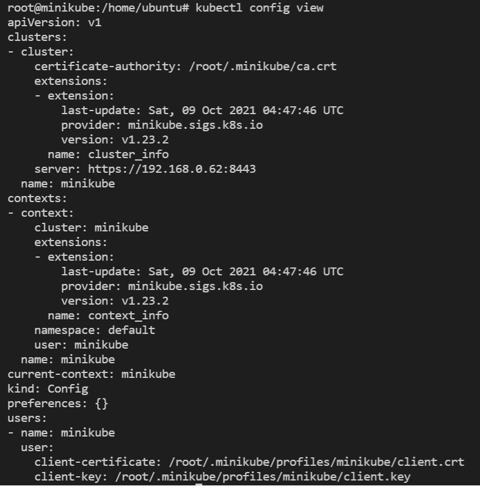
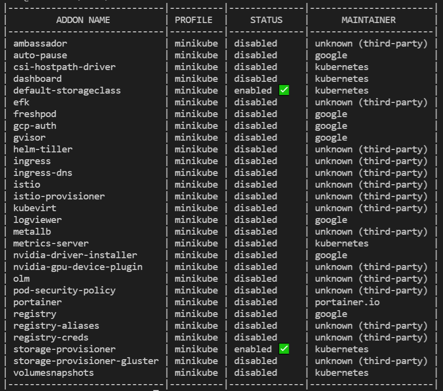

Minikube
Minimum system requirements for minikube
- 2 GB RAM or more
- 2 CPU / vCPUs or more
- 20 GB free hard disk space or more
- Docker / Virtual Machine Manager – KVM & VirtualBox. Docker, Hyperkit, Hyper-V, KVM, Parallels, Podman, VirtualBox, or VMWare are examples of container or virtual machine managers.
Pre-requisite
We will need 1 VM to create a single node kubernetes cluster using minikube.
We are using following setting for this purpose:
- 1 Linux machine for master, ubuntu-22.04-x86_64 or your choice of Ubuntu OS image, cpu-a.2 flavor with 2vCPU, 4GB RAM, 20GB storage - also assign Floating IP to this VM.
- setup Unique hostname to the machine using the following command:
echo "<node_internal_IP> <host_name>" >> /etc/hosts
hostnamectl set-hostname <host_name>
For example,
echo "192.168.0.62 minikube" >> /etc/hosts
hostnamectl set-hostname minikube
Install Minikube on Ubuntu
Run the below command on the Ubuntu VM:
- SSH into minikube machine
-
Switch to root user:
sudo su -
Update the repositories and packages:
apt-get update && apt-get upgrade -y
- Install
curl,wget, andapt-transport-https
apt-get update && apt-get install -y curl wget apt-transport-https
Install Docker
- Install container runtime - docker
sudo apt-get install docker.io -y
- Configure the Docker daemon, in particular to use systemd for the management of the container’s cgroups
cat <<EOF | sudo tee /etc/docker/daemon.json
{
"exec-opts": ["native.cgroupdriver=systemd"]
}
EOF
systemctl enable --now docker
usermod -aG docker ubuntu
systemctl daemon-reload
systemctl restart docker
OR, you can install VirtualBox Hypervisor as runtime:
sudo apt install virtualbox virtualbox-ext-pack -y
Install kubectl
- Install kubectl binary • kubectl: the command line util to talk to your cluster.
snap install kubectl --classic
This outputs: kubectl 1.22.2 from Canonical✓ installed
- Now verify the kubectl version:
kubectl version -o yaml
Installing minikube
- Install minikube
curl -LO https://storage.googleapis.com/minikube/releases/latest/minikube_latest_amd64.deb
sudo dpkg -i minikube_latest_amd64.deb
OR, install minikube using wget:
wget https://storage.googleapis.com/minikube/releases/latest/minikube-linux-amd64
cp minikube-linux-amd64 /usr/bin/minikube
chmod +x /usr/bin/minikube
- Verify the Minikube installation:
minikube version
minikube version: v1.23.2
commit: 0a0ad764652082477c00d51d2475284b5d39ceed
- Install conntrack: Kubernetes 1.22.2 requires conntrack to be installed in root's path:
apt-get install -y conntrack
- Start minikube: As we are already stated in the beginning that we would be using docker as base for minikue, so start the minikube with the docker driver,
minikube start --driver=none
Note
- To check the internal IP, run the
minikube ipcommand. - By default, Minikube uses the driver most relevant to the host OS. To
use a different driver, set the
--driverflag inminikube start. For example, to use Docker instead of others or none, runminikube start --driver=docker. To persistent configuration so that you to run minikube start without explicitly passing i.e. in global scope the--vm-driver dockerflag each time, run:minikube config set vm-driver docker.
- In case you want to start minikube with customize resources and want installer
to automatically select the driver then you can run following command,
minikube start --addons=ingress --cpus=2 --cni=flannel --install-addons=true --kubernetes-version=stable --memory=6g
Output would like below:
Perfect, above confirms that minikube cluster has been configured and started successfully.
- Run below minikube command to check status:
minikube status
minikube
type: Control Plane
host: Running
kubelet: Running
apiserver: Running
kubeconfig: Configured
- Run following kubectl command to verify the cluster info and node status:
kubectl cluster-info
Kubernetes control plane is running at https://192.168.0.62:8443
CoreDNS is running at https://192.168.0.62:8443/api/v1/namespaces/kube-system/services/kube-dns:dns/proxy
To further debug and diagnose cluster problems, use 'kubectl cluster-info dump'.
kubectl get nodes
NAME STATUS ROLES AGE VERSION
minikube Ready control-plane,master 5m v1.22.2
- To see the kubectl configuration use the command:
kubectl config view
The output looks like: 
- Get minikube addon details:
minikube addons list
The output will display like below: 
If you wish to enable any addons run the below minikube command,
minikube addons enable <addon-name>
- Enable minikube dashboard addon:
minikube dashboard
🔌 Enabling dashboard ...
▪ Using image kubernetesui/metrics-scraper:v1.0.7
▪ Using image kubernetesui/dashboard:v2.3.1
🤔 Verifying dashboard health ...
🚀 Launching proxy ...
🤔 Verifying proxy health ...
http://127.0.0.1:40783/api/v1/namespaces/kubernetes-dashboard/services/http:kubernetes-dashboard:/proxy/
- To view minikube dashboard url:
minikube dashboard --url
🤔 Verifying dashboard health ...
🚀 Launching proxy ...
🤔 Verifying proxy health ...
http://127.0.0.1:42669/api/v1/namespaces/kubernetes-dashboard/services/http:kubernetes-dashboard:/proxy/
- Expose Dashboard on NodePort instead of ClusterIP:
-- Check the current port for kubernetes-dashboard:
kubectl get services -n kubernetes-dashboard
The output looks like below:

kubectl edit service kubernetes-dashboard -n kubernetes-dashboard
-- Replace type: "ClusterIP" to "NodePort":

-- After saving the file:
Test again: kubectl get services -n kubernetes-dashboard
Now the output should look like below:

So, now you can browser the K8s Dashboard, visit http://<Floating-IP>:<NodePort>
i.e. http://140.247.152.235:31881 to view the Dashboard.
Deploy A Sample Nginx Application
-
Create a deployment, in this case Nginx: A Kubernetes Pod is a group of one or more Containers, tied together for the purposes of administration and networking. The Pod in this tutorial has only one Container. A Kubernetes Deployment checks on the health of your Pod and restarts the Pod's Container if it terminates. Deployments are the recommended way to manage the creation and scaling of Pods.
-
Let's check if the Kubernetes cluster is up and running:
kubectl get all --all-namespaces
kubectl get po -A
kubectl get nodes
kubectl create deployment --image nginx my-nginx
- To access the deployment we will need to expose it:
kubectl expose deployment my-nginx --port=80 --type=NodePort
To check which NodePort is opened and running the Nginx run:
kubectl get svc
The output will show:
OR,
minikube service list
|----------------------|---------------------------|--------------|-------------|
| NAMESPACE | NAME | TARGET PORT | URL |
|----------------------|---------------------------|--------------|-------------|
| default | kubernetes | No node port |
| default | my-nginx | 80 | http:.:31081|
| kube-system | kube-dns | No node port |
| kubernetes-dashboard | dashboard-metrics-scraper | No node port |
| kubernetes-dashboard | kubernetes-dashboard | 80 | http:.:31929|
|----------------------|---------------------------|--------------|-------------|
OR,
kubectl get svc my-nginx
minikube service my-nginx --url
Once the deployment is up, you should be able to access the Nginx home page on the allocated NodePort from the node's Floating IP.
Go to browser, visit http://<Floating-IP>:<NodePort>
i.e. http://140.247.152.235:31081/ to check the nginx default page.
For your example,
Deploy A Hello Minikube Application
- Use the kubectl create command to create a Deployment that manages a Pod. The Pod runs a Container based on the provided Docker image.
kubectl create deployment hello-minikube --image=k8s.gcr.io/echoserver:1.4
kubectl expose deployment hello-minikube --type=NodePort --port=8080
- View the port information:
kubectl get svc hello-minikube
minikube service hello-minikube --url
Go to browser, visit http://<Floating-IP>:<NodePort>
i.e. http://140.247.152.235:31293/ to check the hello minikube default page.
For your example,
Clean up
Now you can clean up the app resources you created in your cluster:
kubectl delete service my-nginx
kubectl delete deployment my-nginx
kubectl delete service hello-minikube
kubectl delete deployment hello-minikube
Managing Minikube Cluster
- To stop the minikube, run
minikube stop
- To delete the single node cluster:
minikube delete
- To Start the minikube, run
minikube start
- In case you want to start the minikube with higher resource like 8 GB RM and 4 CPU then execute following commands one after the another.
minikube config set cpus 4
minikube config set memory 8192
minikube delete
minikube start